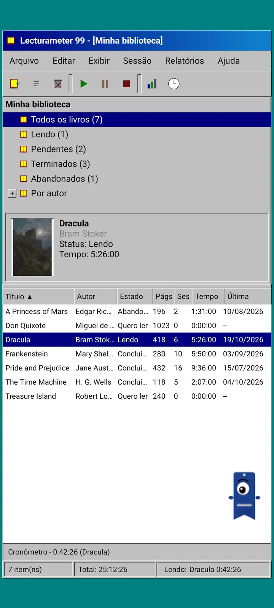
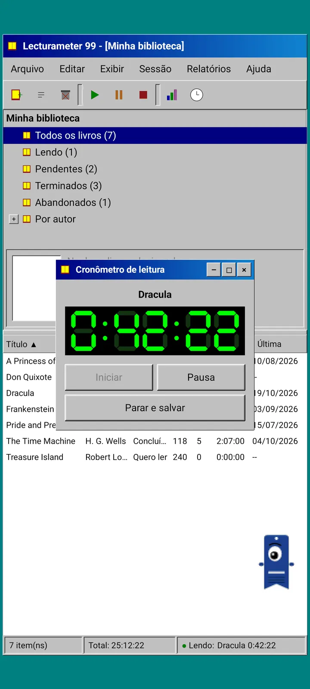
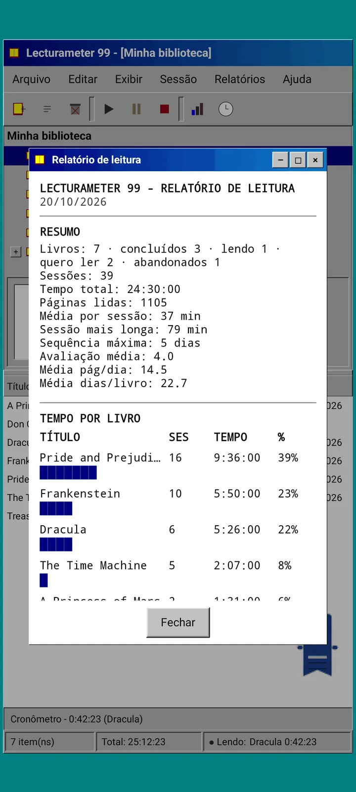
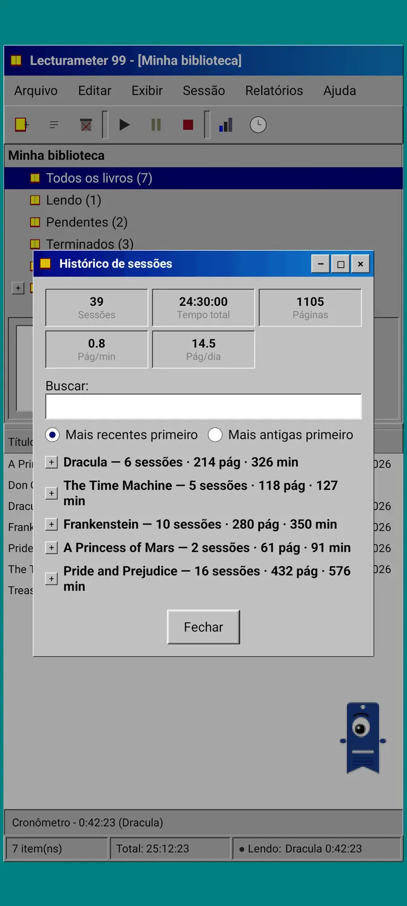
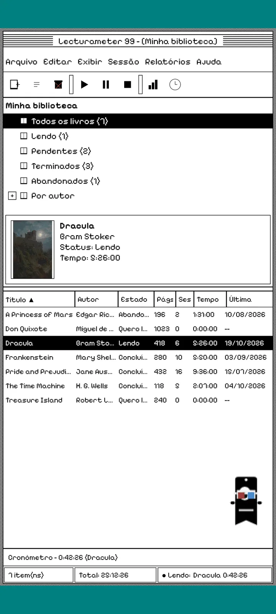
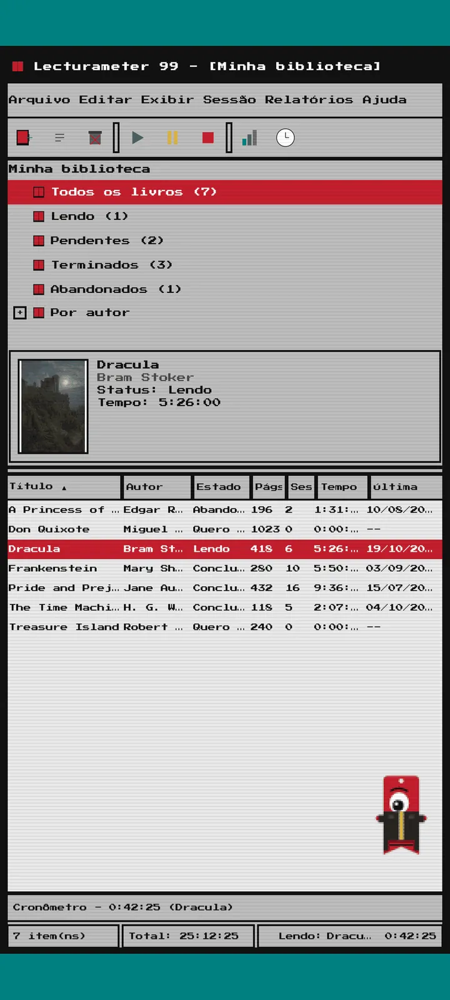
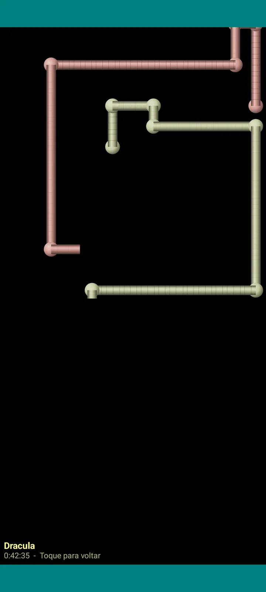

Lecturameter 1999
O Lecturameter como se você o tivesse instalado de um CD-ROM em 1999. Um cliente alternativo do app, com janelas, menus e tabelas, que abre seus backups reais.

O que é
Um programa de desktop do fim dos anos noventa rodando no seu celular. Uma janela sobre uma área de trabalho verde-azulada, barra de menus, barra de ferramentas, árvore de pastas, uma tabela densa e uma barra de status.
- Árvore da biblioteca: todos os livros, lendo, pendentes, concluídos, abandonados e por autor
- Tabela com título, autor, status, páginas, sessões, tempo e última leitura. Toque no cabeçalho de uma coluna para ordenar
- Busca real de livros, usando o mesmo catálogo do Lecturameter
- Importa e exporta o backup do Lecturameter e o CSV do Goodreads. Seus dados entram e saem sem perder nada

Por que existe
Um experimento: reconstruir a ideia do Lecturameter do zero, com premissas de design radicalmente diferentes, sem mexer no app de verdade. De todas as reinterpretações, a de 1999 foi a de que mais gostei, então a terminei como um exercício divertido e a transformei num cliente completo. É mais simples que o Lecturameter de propósito: é um experimento e, em princípio, não terá mais desenvolvimento.
- Cronômetro numa janela flutuante com visor LCD verde. Ele se move, minimiza para uma barra de tarefas e continua contando na barra de status
- Ao parar, o diálogo de salvar sessão pede suas páginas e calcula seu ritmo, igualzinho ao Lecturameter
- As sessões salvas são sessões do Lecturameter: elas voltam para o app moderno se você exportar um backup do Lecturameter 1999 e importá-lo no Lecturameter.

Relatório de leitura
As estatísticas são um relatório impresso: resumo, tempo por livro com barras de blocos, velocidade em páginas por dia, um calendário do ano desenhado com caracteres e os últimos sete dias.

Histórico de sessões
Sessões agrupadas por livro numa árvore com mais e menos, com cinco números no topo: sessões, tempo total, páginas, páginas por minuto e páginas por dia.

Salvar sessão
Data, minutos, primeira e última página, comentário. O resumo calcula páginas e ritmo enquanto você digita. Se você chegar à última página, ele pergunta se você terminou o livro.

Pagi 99
O Pagi também viaja até 1999: pixelado e solto na tela como os assistentes de escritório da época. Você pode arrastá-lo, ele diz uma frase quando você toca nele e mostra dicas em balões amarelos.
Temas
O Classic 98 é grátis e é o padrão. O pacote adiciona mais seis, cada um com seu próprio fundo e seus próprios sons.

Escolha pelo menu Exibir
Exibir, Tema... abre uma janela com os sete temas. A mudança chega a todas as janelas, ao cronômetro e ao Pagi de uma vez.
- Classic 98, grátis e padrão: janelas cinzas, barras de título azul-marinho e área de trabalho verde-azulada
- Pacote de temas: 1984, Gumdrop, Memory, Towers, Core e 8-bit
- Cada tema traz seu próprio fundo de área de trabalho e seus próprios sons para toques, janelas e cronômetro
- Exibir, Sons do tema desliga os sons se você lê em silêncio

Classic 98
Janelas cinzas, barras de título azul-marinho e área de trabalho verde-azulada. Grátis, é o tema com que o app abre.

1984
Uma área de trabalho preto e branco de um bit, com padrões de pontos e janelas quadradas.

Gumdrop
Plástico colorido translúcido, botões arredondados e listras ao fundo.

Memory
Os menus de um console de disco dos anos noventa, em tons de azul-escuro.

Towers
Outro console de disco dos anos noventa, azul-noite com linhas azul-claras.

Core
Um console preto e verde, como uma tela que nunca desliga.

8-bit
Pixels gordos, poucas cores e letras quadradas.

Experimente antes de pagar
Toque num tema bloqueado e o app inteiro muda para ele. Se você fechar sem comprar, o tema anterior volta.
Protetores de tela
Eles só aparecem enquanto o cronômetro está rodando e você deixa o celular em paz. Esperam 1, 3 ou 5 minutos, ou nunca. Um toque te leva de volta e o cronômetro continua contando.

Livros voadores
Livros de pixels batendo as capas por uma tela preta.

Campo de letras
Letras de muitos alfabetos passando à deriva, como um céu estrelado.

Tubos de página
Tubos feitos de páginas que se desenham sozinhos até a tela encher.

Pagi quicando
O Pagi quicando nas bordas da tela.

Relógio de leitura
O tempo da sessão em grandes dígitos de LCD.

Fantasias para o Pagi
Oito fantasias para o Pagi 99. Você as escolhe em Exibir, Fantasia do Pagi..., e pode experimentá-las antes de pagar.
- Toca-fitas
- Boné virado para trás
- Óculos 3D
- Óculos de sol neon
- Disquete na mão
- Jaqueta de couro
- Bichinho de bolso
- Coroa de papelão
Loja
O app é grátis e completo para registrar sua leitura. O que você pode comprar só muda a aparência.
O app inteiro, sem limite de tempo.
- Biblioteca, busca, cronômetro e sessões
- Relatório de leitura e histórico de sessões
- Backup do Lecturameter e CSV do Goodreads, de entrada e saída
- Tema Classic 98 e Pagi 99
- Sem conta e sem anúncios
Pagamentos únicos, sem assinaturas.
- Pacote de temas, €3.49: 6 temas com fundo e sons, mais os protetores de tela
- Protetores de tela, €1.99: os 5 protetores de tela
- Fantasias do Pagi, €1.99: as 8 fantasias
- O 1999 completo, €4.49: temas, protetores de tela e fantasias
Gorjetas opcionais no menu Ajuda, se você quiser me pagar um café.
Temas e fantasias podem ser experimentados ao vivo antes de pagar. Se você fechar sem comprar, o que você tinha volta.
O que muda em comparação com o Lecturameter
Igual ao Lecturameter
- Mesmos dados: livros, sessões, status, pontuações e notas. O arquivo de backup é o mesmo nos dois apps.
- Busca de livros por título ou autor.
- Cronômetro de verdade: continua contando em segundo plano e até se você fechar o app.
- Sem conta, sem anúncios, sem conexão exceto para buscar livros.
- Os mesmos idiomas do Lecturameter.
Só na edição 1999
- Uma interface de desktop de 1999. Sem Material.
- Janelas de verdade: você as arrasta, minimiza e fecha com o X.
- Relatório de leitura em texto, com um calendário desenhado com caracteres.
- Menu de contexto ao pressionar e segurar, e atalhos de teclado se você conectar um teclado.
- Pagi 99 pixelado com balões de dicas.
- Temas opcionais com fundo e sons próprios, protetores de tela enquanto o cronômetro roda e fantasias para o Pagi.
O que ele deixa de fora, de propósito
- Sem Pro e sem assinatura. Registrar sua leitura é tudo grátis, a loja só vende aparência.
- Sem desafios, bingos, Wrapped anual nem widgets.
- Sem sessão imersiva, sons ambiente nem backup no Google Drive. O backup é salvo como um arquivo.
Teste fechado
O Lecturameter 1999 está em teste fechado no Google Play. O iOS virá depois, ainda sem data.
- Entre no grupo groups.google.com/g/lecturameter-1999
- Cadastre-se como testador em play.google.com/apps/testing/com.lecturameter.r1999
- Instale a partir de Google Play
Em teste fechado no Google Play, iOS depois. Leia o post do blog para ver de onde vem e o que esperar.